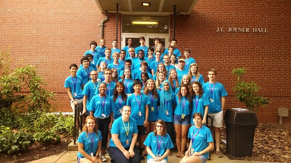

<!DOCTYPE HTML>
<html>
  <head>
    <meta charset="UTF-8">
    <title>Teaching</title>
    <link rel="stylesheet" href="../styles/style.css">
  </head>
</html>

<body>
  <div class="header">
    <h1> Teaching </h1>
  </div>
  <div class = "section">
    <div class ="description">
      <h2>Longleaf School of the Arts</h2>
      Longleaf School of the Arts is a public charter school located in Downtown
      Raleigh, North Carolina. Longleaf is a college preparatory arts focused charter.
      The 2015-2016 school year was Longleaf's third operating year and first
      graduating class. I have had the opportunity to watch Longleaf grow from a
      dream to reality. I joined the faculty at Longleaf during the 2014-2015 school
      year. Working at a new charter school is like working in a startup. Everyone
      on the Longleaf team gets input into how the school functions and the direction
      it will go. During my time at Longleaf I helped restructure and refine the
       mathematics placement procedure. Currently I working on a plan to ensure
       that all of our math classes are aligned not only with state standards but
      across the entire math curriculum.
    </div>
    <div class="video">
      <video width="100%" height="100%" controls>
        <source src="videos/mathCarol.mp4">
          Your browser does not support video html.
      </video>
    </div>
  </div>
  <div class="section">
    <div class ="image">
      
    </div>
    <div class ="description">
      <h2>North Carolina Governor's School</h2>
      North Carolina Governor's School is a five and a half week summer program
      for academically and artistically gifted rising seniors. I have had the
      pleasure of working at Governor's School East as a mathematics instructor
      since 2011. Over the summer I teach a lecture course and run between three
      and four research groups. Working with some of North Carolina's most promising
      matematicians affords me the opportunity to explore complex topics. During my
      time at Governor's School I have taught courses on Topology and Quantum Computing.
      I have mentored research groups in fractals, modeling, soundwaves, prime numbers,
      etc. I also work with a group of students in a course called Area III throughout the summer.
      Area III is an opportunity for students to have discussions about values,
      beliefs, ethics etc. Area III material is student driven.
    </div>
  </div>
</body>
